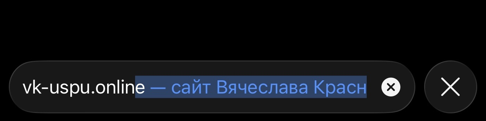
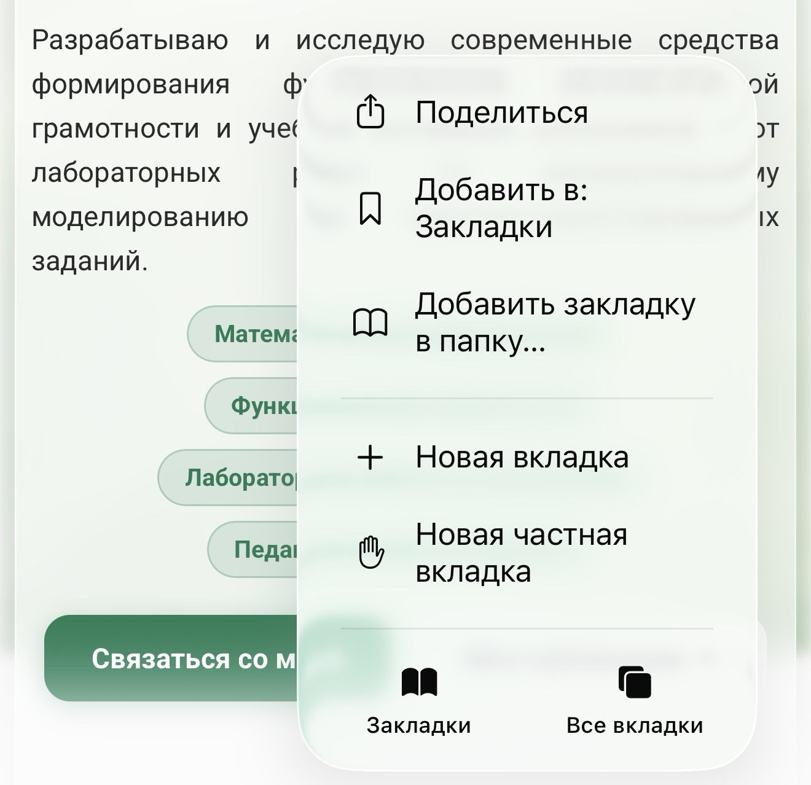
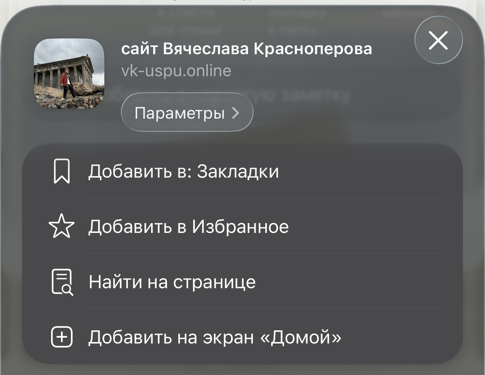
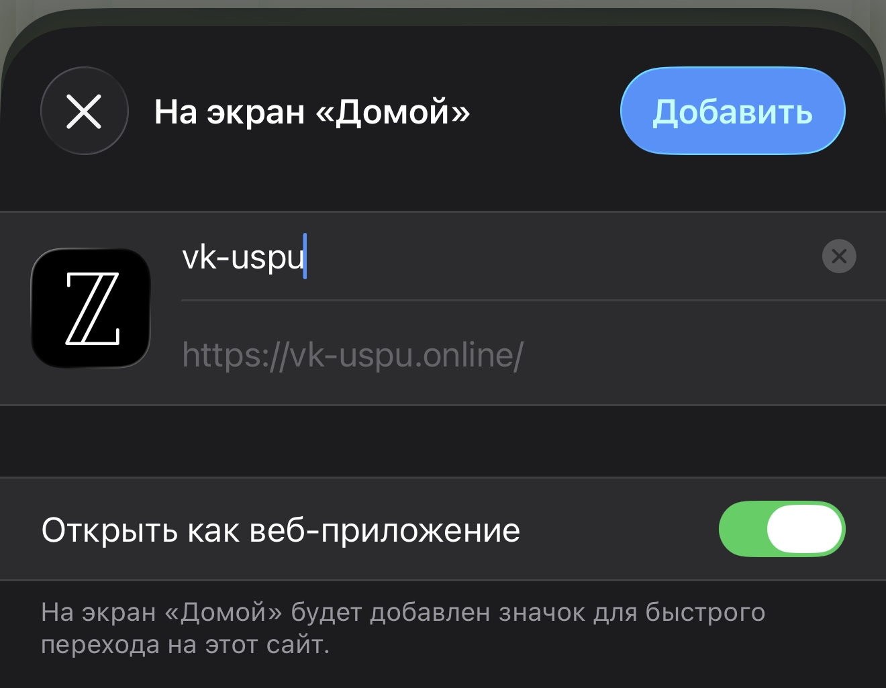

1 Откройте сайт в Safari  Установка на iPhone выполняется через Safari. Если сайт открыт в другом браузере, сначала откройте эту же страницу в Safari. Скопировать ссылку
2 Откройте меню «Поделиться»  В нижней панели Safari нажмите кнопку «Поделиться» — квадрат со стрелкой вверх. Откроется системное меню действий для текущей страницы.
3 Выберите «На экран "Домой"»  Пролистайте список действий вниз и найдите пункт «На экран "Домой"». Нажмите его, чтобы перейти к настройке добавления сайта.
4 Нажмите «Добавить»  В правом верхнем углу нажмите «Добавить». Иконка сайта появится на домашнем экране, после чего его можно запускать как обычное приложение.